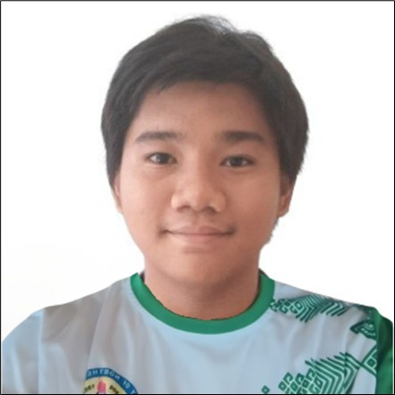

Cyrush Mcdale Buenafe

Summary
I am a 3rd-year BS Computer Science student with experience in creating Java programs, and I am a very hardworking individual.
Education
- Bachelor of Science in Computer Science - University of Northern Philippines (2023-2027)
- Secondary (Junior High School and Senior High School) Degree – Abra High School (2017-2023)
- Elementary Degree – Bangued East Central School (2014-2017)
- Primary Degree – Divine Word College of Bangued (2010-2013)
Work Experience
-
Assistant (SPES) - Environment and Natural Resources Office (ENRO)
July 2023 - August 2023
- Distributed relief good for the Community Pantry
- Cleaned and organized supplies in the office
- Went to Plastic Recycling Facility/CRC Gaddani Tayum and grind plastic wastes to recycle
Skills
- Customer Service: ⭐️⭐️⭐️⭐️
- Microsoft Office Suite: ⭐️⭐️
- Programming Skills: ⭐️⭐️
Awards and Certifications
- School Science and Technology Fair 2022 – ROBOTICS AND INTELLIGENT MACHINES-TEAM CATEGORY (2022)
- Research and Innovation Congress – Poster Presentation (2023)
- Research and Innovation Congress – Oral Presentation (2023)
- 2022 Regional Academic Festival – STEMazing (2023) 2nd Place
- 2016 Mathematics Teachers Association of the Philippines (MTAP) 2nd Place
- 2016 Division Science and Math Fair Participant
- 2016 District Science and Math Fair 2nd Place
- 2015 District Buwan ng Wika - Sayawit 2nd Place
- 2015 Division School Press Conference – News Writing 6th Place
- 2014 Division Science and Math Fair – Sci Dama 3rd Place
- 2014 Division Buwan ng Wika – Folk Dance Category Participant
- 2014 District Buwan ng Wika – Folk Dance Category 1st Place
Other